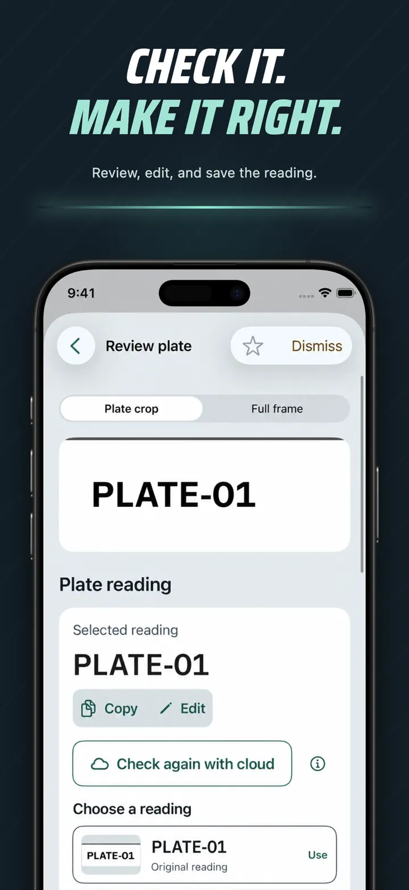
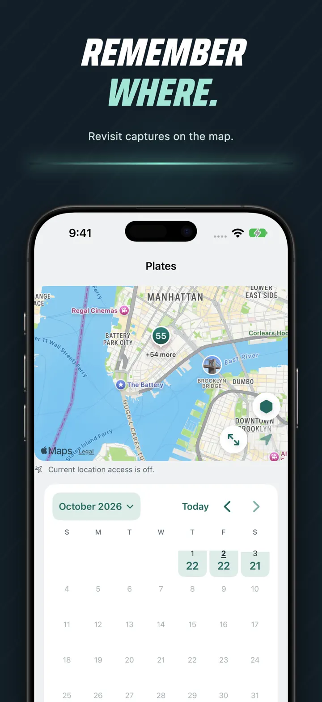

Car Plate Scan: License Reader
Scan plates and revisit your sightings
Read license plates from your camera or photos. Review the text, save the details, and find past sightings with search, maps, and favorites.
View on the App Store
About the app
Scan with the live camera or choose a photo from your library. Review uncertain readings, correct the plate text, and adjust automatic saving and repeat-capture settings.
Keep a crop of the plate and the full photo, along with the capture time and any available location. Revisit repeated sightings of the same plate.
Search your saved plates, browse captures by date or on a map, and mark favorites to find them quickly.
Screenshots






Privacy & processing
Car Plate Scan records what you capture. It does not identify vehicle owners or provide VIN, registration, or vehicle-history reports.
Core plate reading runs on your device. Optional cloud review uses Apple Private Cloud Compute on supported devices and requires an internet connection. Availability depends on the operating system, device, and service limits.
Recognition may be incorrect. Review results before relying on them. Plate formats and image conditions affect results. Do not use the app while driving, and respect others’ privacy.
Car Plate Scan: License Reader
Read license plates from your camera or photos. Review the text, save the details, and find past sightings with search, maps, and favorites.
View on the App Store